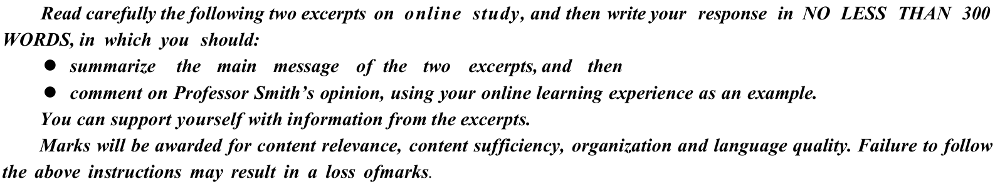
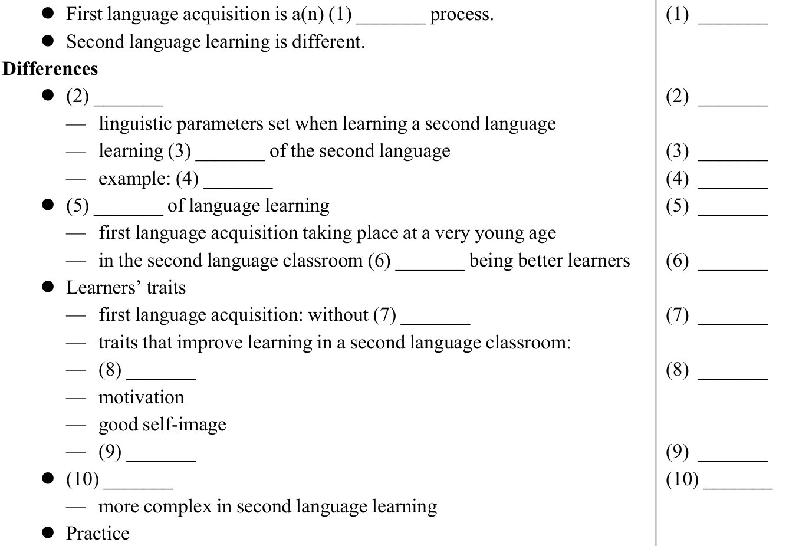
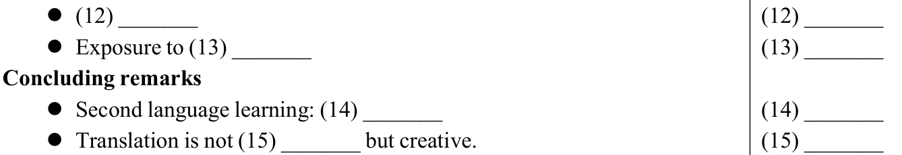

TEST FOR ENGLISH MAJORS (2024)
-GRADE EIGHT-
TIME LIMIT: 150 MIN
PART I LISTENING COMPREHENSION (25 MIN)
SECTION A MINI-LECTURE
In this section you will hear a mini-lecture. You will hear the mini-lecture ONCE ONLY. While listening to the mini-lecture, complete the gap-filling task on ANSWER SHEET ONE and write NO MORE THAN THREE WORDS for each gap. Make sure what you fill in is both grammatically and semantically acceptable. You may use the blank sheet for note-taking.
You have THIRTY seconds to preview the gap-filling task.
Now, listen to the mini-lecture. When it is over, you will be given THREE minutes to check your work.
SECTION B INTERVIEW
In this section you will hear TWO interviews. At the end of each interview, five questions will be asked about what was said. Both the interviews and the questions will be read ONCE ONLY. After each question there will be a ten-second pause. During the pause, you should read the four choices of A, B, C and D, and mark the best answer to each question on ANSWER SHEET TWO.
You have THIRTY seconds to preview the choices.
Now, listen to the first interview. Questions 1 to 5 are based on the first interview
2.
5.
8.
9.
10.
PART II READING COMPREHENSION (45 MIN)
SECTION A MULTIPLE CHOICE QUESTIONS
In this section there are three passages followed by fourteen multiple choice questions. For each multiple choice question, there are four suggested answers marked A, B, C and D. Choose the one that you think is the best answer and mark your answers on ANSWER SHEET TWO.
PASSAGE ONE
(1) If the properties of human language make it such a unique communication system, quite different from the communication systems of other creatures, then it would seem extremely unlikely that other creatures would be able to understand it. Some humans, however, do not behave as if this is the case. There is, after all, a lot of spoken language directed by humans to animals, apparently under the impression that the animal follows what is being said. Riders can say Whoa to horses and they stop. Should we treat these examples as evidence that non-humans can understand human language? Probably not. The standard explanation is that the animal produces a particular behavior in response to a particular sound-stimulus or noise, but does not actually “understand” what the words in the noise mean.
(2) In an early attempt to teach a chimpanzee to use human language, in the 1930s, two scientists (Luella and Winthrop Kellogg) raised an infant chimpanzee together with their baby son. The chimpanzee, called Gua, was reported to be able to understand about a hundred words, but did not “say” any of them. In the 1940s, a chimpanzee named Viki was reared by another scientist couple (Catherine and Keith Hayes) in their own home, exactly as if she were a human child. These foster parents spent five years attempting to get Viki to “say” English words by trying to shape her mouth as she produced sounds. Viki eventually managed to produce some words, rather poorly articulated versions of “mama”, “papa” and “cup”. In retrospect, this was a remarkable achievement since it has become clear that non-human primates do not actually have a physically structured vocal tract which is suitable for articulating the sounds used in speech.
(3) Recognizing that a chimpanzee was a poor candidate for spoken language learning, another scientist couple (Beatrix and Allen Gardner) set out to teach a female chimpanzee called Washoe to use a version of American Sign Language. This sign language has all the essential properties of human language and is learned by many congenitally deaf children as their natural first language. From the beginning, the Gardner’s and their research assistants raised Washoe like a human child in a comfortable domestic environment. Sign language was always used when Washoe was around and she was encouraged to use signs. In a period of three and a half years, Washoe came to use signs for more than a hundred words. Even more impressive was Washoe’s ability to take these forms and combine them to produce “sentences” of the type “gimme tickle”, “more fruit” and “open food drink”. Some of the forms appear to have been inventions by Washoe, as in her novel sign for “bib” and in the combination “water bird” (referring to a swan), which would seem to indicate that her communication system had the potential for productivity.
(4) At the same time as Washoe was learning sign language, another chimpanzee named Sarah was being taught (by Ann and David Premack) to use a set of plastic shapes for the purpose of communicating with humans. These plastic shapes represented “words” that could be arranged in sequence to build “sentences”. The basic approach was quite different from that of the Gardner’s. Sarah was systematically trained to associate these shapes with objects or actions. She remained an animal in a cage, being trained with food rewards to manipulate a set of symbols. Once she had learned to use a large number of these plastic shapes, Sarah was capable of getting an apple by selecting the correct plastic shape (a blue triangle) from a large array. Sarah was also capable of producing “sentences” such as “Mary give chocolate Sarah” and had the impressive capacity to understand complex structures such as “If Sarah put red on green, Mary give Sarah chocolate”.
(5) A psychologist Herbert Terrace argued that chimpanzees simply produce signs in response to the demands of people and tend to repeat signs those people use, yet they are treated as if they are taking part in a “conversation”. As in many critical studies of animal learning, the chimpanzees’ behavior is viewed as a type of conditioned response to cues provided by human trainers.
(6) Important lessons have been learned from attempts to teach chimpanzees how to use forms of language. We have answered some questions. Were Washoe and Sarah capable of taking part in interaction with humans by using a symbol system chosen by humans and not chimpanzees? The answer is clearly “Yes.” Could Washoe and Sarah go on to perform linguistically on a level comparable to a two-year-old child? The answer is just as clearly “No.” In arriving at these answers, we have also had to face the fact that, even with our list of key properties, we still don’t seem to have a non-controversial definition of what counts as “using language”. It has to be fair to say that, in both cases, we observe the participants “using language”. However, there is a difference. Underlying the two-year-old’s communicative activity is the capacity to develop a highly complex system of sounds and structures, plus a set of computational procedures, which will allow the child to produce extended discourse containing a potentially infinite number of novel utterances. No other creature has been observed “using language” in this sense. It is in this more fundamental or abstract sense that we say that language is uniquely human.
11. What can we learn from the two attempts in Para. 2?
12. Which of the following statements about Washoe and Sarah is INCORRECT?
13. Which of the following is a conditioned response to human cues?
14.What is the topic of the passage?
PASSAGE TWO
(1) It was well past midnight this past July and the round-the-clock Arctic sun was shining on Mercy Bay. Exhausted Parks Canada archaeologist Ryan Harris was experiencing a rare moment of rest on the rocky beach, looking out over the bay’s dark, ice-studded water. Around him, a dozen red-and-yellow tents lined the shoreline — the only signs of life. Every day for the previous two weeks, work had started by mid-morning and continued nonstop for 16 hours. Night and day had little relevance in the murky, near-freezing waters. Along with Parks Canada’s chief of underwater archaeology, Marc-Andre Bernier, Harris has overseen more than 100 dives at this remote inlet of Banks Island in Aulavik National Park, exploring the wreck of HMS Investigator, a British vessel that has sat on the bottom of the bay for more than 160 years.
(2) Harris and a small team of archaeologists had discovered Investigator in 2010 and returned in 2011 with a larger team to dive, study, and document the wreck, which holds a critical place in the history of Arctic exploration. Twenty-five feet below the surface, Investigator sits upright, intact, and remarkably well preserved. Silt covers everything below the main deck, entombing the officers’ cabins, the ship’s galley, and a full library. The archaeologists had intended to leave the wreck and its artifacts where they had lain since the polar ship was abandoned, trapped in ice, on June 3, 1853. Artifact recovery was not part of their original plan, but that plan changed after their first few dives.
(3) The team was instantly surprised by the number of artifacts they saw — muskets (火枪), shoes, and hunks of copper sheathing rested on Investigator’s upper deck, dangled off the hull, or lay haphazardly on the sediment. Leaving these artifacts behind in Mercy Bay would have made them vulnerable to the icebergs that regularly scour the bay’s floor, including the ones the six-man dive team had been dodging since their arrival.
(4) Each piece fished from the water was a clue to life at sea aboard a ship during a period of British fervor for Arctic exploration. The captain of Investigator, Robert McClure, was originally sent to find and rescue two ships, HIMS Erebus and HMS Terror, that Sir John Franklin had led into the Arctic in 1845 to discover the long-sought Northwest Passage connecting the Atlantic and Pacific oceans. Investigator’s voyage ended, without sight or word of Franklin’s ships or crew, when it was set upon by ice in Mercy Bay. After 39 months at sea, the listing ship sat, slowly being crushed on all sides, for three frigid years — with no Inuit encounters, no British search parties, and no relief. For much of that time, McClure and his crew of 60 were desperate and under constant threat of starvation, until a surprising rescue in the spring of 1853. Fifty-five men survived the ordeal.
(5) In July 2010, after months of study to pinpoint Investigator’s resting place, the actual discovery of the wreck took just a few minutes. Harris was in the bay in an inflatable boat testing sonar equipment when the wreck came into range. The four hours of video gathered on that trip showed that the ship was, in essence, frozen in time, protected by the cold water and opaque, light-blocking ice cover. It would be a year before they could return with cold-water diving equipment to have a closer, more detailed look. Over that year, the Parks Canada team pored over photographs and examined glowing gold ultrasound images that showed timber from the wreck scattered across the upper deck like matchsticks. They sought and received the blessing for a more intensive exploration of the wreck site from the 136 residents of Sachs Harbour, an Inuvialuit (Inuit from the western Arctic) community on the southwestern tip of Banks Island, the closest permanent community, some 125 miles away. In addition to the underwater work to document the wreck, archaeologist Henry Cary led a land-based survey and excavation team of Inuvialuit archaeologists, conservation officers, and park staff. It fell upon Cary to shuttle the 8,820 pounds of equipment up to the 74th parallel, including tents, a three-week supply of food, two boats, diving gear, compressors, recording equipment, surveying tools, and 20 barrels for collecting fresh drinking water.
(6) The archaeologists came prepared for delays, nasty weather, and polar bears — but they weren’t prepared for the number of artifacts that needed recovery. Harris, Bernier, Cary, and their crews had packed cameras, lasers, and measuring tapes to document the sites but fewer items to help them retrieve, excavate, or transfer artifacts. Recovering the wreck’s finds quickly used up their small toolkit for stabilizing artifacts: foam padding, tongue depressors, and gauze bandages.
(7) “We had not really envisioned the number of artifacts that were visible and exposed on the deck. So, basically, we had to improvise,” says Bernier.
(8) Someone ripped the lid of a large black storage case off its hinges to use as a cradle to lift a bent and corroded musket from the frigid waters. A large food cooler was loaded with a shredded, twisted, oxidized sample of the copper sheathing used by the British navy to reinforce their Arctic fleet for contact with icebergs. To protect a fragile rectangle of encrusted felt — a novel addition to Investigator that was intended to keep the ship watertight — Harris fashioned a cover out of absorbent chamois (鹿皮), ripped up an old black T-shirt to place underneath it, and sandwiched the artifact between floorboards taken from the boat that had shuttled them between land and the wreck. The artifacts then made a more than 4,000-mile journey, by helicopter and commercial airliner, to the Parks Canada conservation lab in Ottawa, where they are being conserved and studied today.
15. Which of the following details about the underwater exploration is CORRECT?
16. What can we learn about Investigator?
17. Why did Bernier say that they had to improvise (Para. 7)?
18. Which of the following words best describes the archaeologists’ way of protecting the retrieved artifacts?
19. The last paragraph mentions all the following EXCEPT ______
PASSAGE THREE
(1) My father was, I am sure, intended by nature to be a cheerful, kindly man. Until he was thirty-four years old he worked as a farmhand for a man named Thomas Butterworth whose place lay near the town of Bidwell. He had then a horse of his own and on Saturday evenings drove into town to spend a few hours in social intercourse with other farmhands. In town he drank several glasses of beer and stood about in Ben Head’s saloon — crowded on Saturday evenings with visiting farmhands. Songs were sung and glasses thumped on the bar. At ten o’clock father drove home along a lonely country road, made his horse comfortable for the night and himself went to bed, quite happy in his position in life. He had at that time no notion of trying to rise in the world.
(2) It was in the spring of his thirty-fifth year that father married my mother, then a country school teacher, and in the following spring I came wriggling and crying into the world. Something happened to the two people. They became ambitious. The passion for getting up in the world took possession of them.
(3) It may have been that mother was responsible. Being a school teacher she had no doubt read books and magazines. She had, I presume, read of how some people rose from poverty to fame and greatness and as I lay beside her — in the days of her lying-in — she may have dreamed that I would someday rule men and cities. At any rate she induced father to give up his place as a farmhand, sell his horse and embark on an independent enterprise of his own. She was a tall silent woman with a long nose and troubled grey eyes. For herself she wanted nothing. For father and myself she was incurably ambitious.
(4) The first venture into which the two people went turned out badly. They rented ten acres of poor stony land on Griggs’s Road, eight miles from Bidwell, and launched into chicken raising. I grew into boyhood on the place and got my first impressions of life there. From the beginning they were impressions of disaster and if, in my turn, I am a gloomy man inclined to see the darker side of life, I attribute it to the fact that what should have been for me the happy joyous days of childhood were spent on a chicken farm.
(5) One unversed in such matters can have no notion of the many and tragic things that can happen to a chicken. It is born out of an egg, lives for a few weeks as a tiny fluffy thing such as you will see pictured on Easter cards, then becomes hideously naked, eats quantities of corn and meal bought by the sweat of your father’s brow, gets diseases called pip, cholera, and other names, stands looking with stupid eyes at the sun, becomes sick and dies. A few hens and now and then a rooster, intended to serve God’s mysterious ends, struggle through to maturity. The hens lay eggs out of which come other chickens and the dreadful cycle is thus made complete. It is all unbelievably complex. Most philosophers must have been raised on chicken farms. One hopes for so much from a chicken and is so dreadfully disillusioned. Small chickens, just setting out on the journey of life, look so bright and alert and they are in fact so dreadfully stupid. They are so much like people they mix one up in one’s judgments of life. If disease does not kill them they wait until your expectations are thoroughly aroused and then walk under the wheels of a wagon — to go squashed and dead back to their maker. Vermin infest their youth, and fortunes must be spent for curative powders.
(6) For ten years my father and mother struggled to make our chicken farm pay and then they gave up that struggle and began another. They decided to move into the town of Bidwell, and embarked in the restaurant business. 5
After ten years of worry with incubators that did not hatch, and with tiny — and in their own way lovely — balls of fluff that passed on into semi-naked pullethood and from that into dead henhood, we threw all aside, packed our belongings on a wagon and drove down Griggs’s Road toward Bidwell, a tiny caravan of hope looking for a new place from which to start on our upward journey through life.
(7) We must have been a sad looking lot, not, I fancy, unlike refugees fleeing from a battlefield. Mother and I walked in the road. The wagon that contained our goods had been borrowed for the day from Mr. Albert Griggs, a neighbor. Out of its sides stuck the legs of cheap chairs and at the back of the pile of beds, tables, and boxes filled with kitchen utensils was a crate of live chickens, and on top of that the baby carriage in which I had been wheeled about in my infancy. Why we stuck to the baby carriage I don’t know. It was unlikely other children would be born and the wheels were broken. People who have few possessions cling tightly to those they have. That is one of the facts that make life so discouraging.
(8) Father rode on top of the wagon. He was then a bald-headed man of forty-five, a little fat and from long association with mother and the chickens he had become habitually silent and discouraged. All during our ten years on the chicken farm he had worked as a laborer on neighboring farms and most of the money he had earned had been spent for remedies to cure chicken diseases. There were two little patches of hair on father’s head just above his ears. I remember that as a child I used to sit looking at him when he had gone to sleep in a chair before the stove on Sunday afternoons in the winter. I had at that time already begun to read books and have notions of my own and the bald path that led over the top of his head was, I fancied, something like a broad road, such a road as Caesar might have made on which to lead his legions out of Rome and into the wonders of an unknown world.
(9) One might write a book concerning our flight from the chicken farm into town. Mother and I walked the entire eight miles — she to be sure that nothing fell from the wagon and I to see the wonders of the world.
20. The author describes his mother as ______
21. What is Para. 5 intended to show?
22. What does “our upward journey” in Para. 6 indicate?
23. What is the relation between the two italicized sentences in Para. 7?
24. Which of the following sentences in Paras. 8 and 9 indicates the author’s sense of hope?
SECTION B SHORT ANSWER QUESTIONS
In this section there are eight short answer questions based on the passages in Section A. Answer each question in NO MORE THAN TEN WORDS in the space provided on ANSWER SHEET TWO.
PASSAGE ONE
25. What does “this” in Para. 1 refer to?
26. How did Washoe demonstrate the potential of productivity (Para. 3)?
PASSAGE TWO
27. What does the word “ones” in Para. 3 refer to?
28. What was Sir John Franklin’s mission?
29. List two preparations the team made for their trip (Para. 5).
PASSAGE THREE
30. Describe in your own words the personality of the author’s father before marriage (Para. 1).
31. Describe in your own words the author’s childhood on a chicken farm (Para. 4).
32. What does the chickens’ fate imply about the author’s family?
PART III LANGUAGE USAGE (15 MIN)
The passage contains TEN errors. Each indicated line contains a maximum of ONE error. In each case, only ONE word is involved. You should proofread the passage and correct it in the following way: For a wrong word, underline the wrong word and write the correct one in the blank provided at the end of the line. For a missing word, mark the position of the missing word with a “/\” sign and write the word you believe to be missing in the blank provided at the end of the line. For an unnecessary word, cross the unnecessary word with a slash “/” and put the word in the blank provided at the end of the line.
EXAMPLE
When /\ art museum wants a new exhibit, (1) an it never buys things in finished form and hangs (2) never them on the wall. When a natural history museum wants an exhibition, it must often build it. (3) exhibit
Proofread the given passage on ANSWER SHEET THREE as instructed.
PART IV TRANSLATION (20 MIN)
Translate the underlined part of the following text from Chinese into English. Write your translation on ANSWER SHEET THREE.
中国科幻小说在国际上越来越受欢迎，已成为一种新的国际交流方式。可以预见，中国科幻将创作出更多跨越国界、具有世界影响力的优秀作品。中国科幻要走向未来，必不可少的是文化使命感。如何将中国人对科技、宇宙、未来的想象，深刻地展现给世界，同时融入中华优秀传统文化，呈现对构建人类命运共同体的深入思考，这是摆在中国科幻作家面前的课题。
本页部分文字层异常，已保留原图文字区域；这些区域随窗口缩放，暂不能重新换行或复制。
PART V WRITING (45 MIN)

Write your response on ANSWER SHEET FOUR.
Excerpt 1 The Convenience of Online Learning
With the widespread use of the computer and the smartphone, an increasing number of people tend to use the Internet to get information and acquire knowledge, which is quite convenient. However, about ten to twenty years ago, when people wanted to learn a language, they had to endure hours of school lessons or evening classes, with their heads buried in textbooks.
Nowadays, technology appears to be providing a better and more accessible way of learning languages. Having a smartphone means you can have a virtual teacher with you wherever you go. One of the many popular APPs offers 91 courses in 30 languages and has more than 300 million users. Whatever you want to learn, language-learning APPs allow you to go at your own pace and fit learning around other commitments.
Many schools in China have adopted online platforms to teach classes. In most cases, these platforms employ adaptive learning techniques which customize the learning experience based on each student’s needs, interests, and learning styles. This personalized approach convinces people of the effectiveness of online learning.
Excerpt 2 Problems Concerning Online Education
Technology has accelerated the wide spread of online education, which appears to be more accessible and more convenient compared with traditional education. However, there are also problems concerning online education. Some people may ask, for example, how can one learn subjects such as chemistry without being able to use the laboratory equipment, how can one learn a language without face-to-face interaction involving gestures, facial expressions, body postures, and how can one meet extra-curricular requirements, such as forming good habits, holding up social norms and keeping high standards of discipline if they are stuck behind a computer monitor? There are many issues that need to be addressed if online education is to thrive.
Professor Smith, department head of modern languages at River University, argues that technology never spells the end of traditional classrooms and teachers. She says that teaching APPs should be used alongside conventional classroom methods, not to the exclusion of traditional teaching. And she adds, “The APPs are not designed for degrees, but they could be additional resources.”
本页部分文字层异常，已保留原图文字区域；这些区域随窗口缩放，暂不能重新换行或复制。
ANSWER SHEET 1
PART I LISTENING COMPREHENSION
SECTION A MINI-LECTURE
Why is it harder to learn a second language? Introduction

— (11) _______ in second language learning (11) _______ Similarities

ANSWER SHEET 3
PART III LANGUAGE USAGE
A database-management system is a collection of interrelated data and a set of programs to access those data. The collection of data, usually referred to as the database, contain information relevant to an enterprise. Its primary goal is to provide a (1) _______ way to store and retrieve database information.
Database systems are designing to manage large bodies of information. (2) _______ Management of data involves both defining structures for storage of information and provide mechanisms for its manipulation. In addition, the database system must (3) _______ ensure information safety, despite system crashes or attempts at unauthorized access. If data are to be shared between several users, the system must avoid possible (4) _______ anomalous results. Computer scientists have developed various concepts and techniques for managing data, so information is very important in most organizations. (5) _______
The earliest database systems arose in the 1960s in response to the computerized management of commercial data. Those earlier applications were relatively simple compared with modern database applications, that include highly sophisticated, (6) _______ worldwide enterprises.
All database applications share important common elements. The central aspect (7) _______ of the application is the data themselves. Today, some of the most valuable corporations are valuable because of their physical assets, but because of the (8) _______ information they own. Imagine of a bank without its data on accounts and customers (9) _______ or a social-network site that loses connections with their users. Such companies’ value (10)_______ would be almost totally lost under such circumstances.